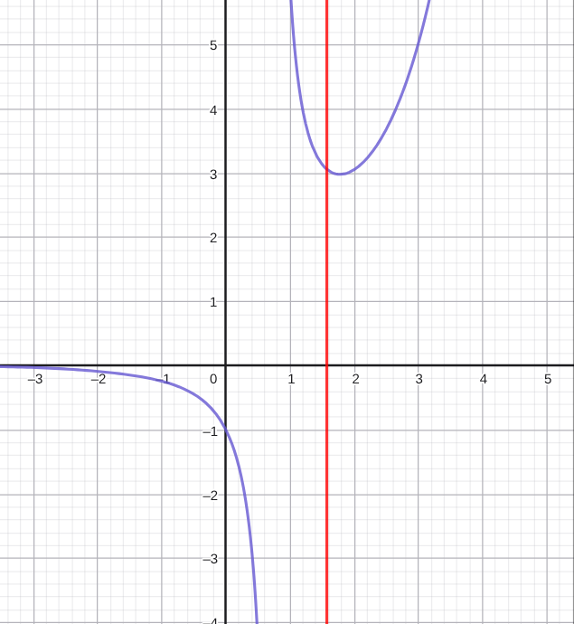

\(f(x)=e^x+a\cos x-ax\ge 0\) 在 \(x\in [0,\dfrac{\pi}{2}]\) 恒成立, 求 \(a\) 取值范围
解答
\(a\in [-1, \frac{2}{\pi}e^{\frac{\pi}{2}}]\)
解:
分参: \(e^x\ge a(x-\cos x)\)
它按道理属于第一类型, 就是分参直接做出来的, 不过本题的特点是: 要讨论分母正负
\(x-\cos x\) 在 \([0,\frac{\pi}{2}]\) 先正后负, 有分界点 \(m\), 满足 \(m=\cos m\)
\(x=m\) 时显然成立, 讨论左右两半.
左半: \([0,m)\) 上, \(a\ge \dfrac{e^x}{x-\cos x}\)
右半: \((m,\frac{\pi}{2}]\) 上, \(a\le \dfrac{e^x}{x-\cos x}\)
函数都是一样的, 设: \(F(x)=\dfrac{e^x}{x-\cos x}\)
\[F'(x)=\frac{e^x(x-\cos x-\sin x-1)}{(x-\cos x)^2}\]
可以证明:
\[x-\cos x-\sin x-1\lt 0\]
在 \([0,\frac{\pi}{2}]\) 上恒成立, 可以对它求导研究其性质, 不困难
所以:
\[F(x):\quad [0,m)\downarrow (m,\frac{\pi}{2}]\downarrow\]
这是两段函数不可以说整个递减, 可以看到它图像是这样子:

紫色的是 \(F(x)\), 红色标记的是 \(x=\dfrac{\pi}{2}\)
所以:
左半, \([0,m)\) 上最大值就是 \(F(0)\)
右半, \((m,\frac{\pi}{2}]\) 上最小值就是 \(F(\frac{\pi}{2})\)
这两个合起来就是答案.
tags: 恒成立, 恒成立-直接分参, 恒成立-分参正负讨论